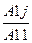

1.Основні поняття.
2.Метод Гаусса.
3.Метод ітерацій.
4.Метод Зейделя.
1.Серед задач, які розглядаються в лінійній алгебрі, особливе місце займають такі чотири проблеми: розв’язування систем алгебраїчних лінійних рівнянь, обчислення визначників, знаходження обернених матриць, визначениня власних значень, і власних векторів матриць. Ці задачі лінійної алгебри є допоміжними під час реалізації багатьох алгоритмів обчислювальної математики, математичної фізики, обробки результатів експериментальних досліджень. Тут ми зупиняємося на методі Гаусса развязування систем лінійних алгебраїчних рівнянь. Також розглядаємо і методи ітерацій та Зейделя.
Нехай дано систему n лінійний алгебраїчних рівнянь з n змінними:
Cистему (1) можна записувати у вигляді одного матричного рівняння AX=B
Де
а11 а12 … а1n
а21 а22 … а2n
A=(aij)= -----------
аn1 аn2… аn n
Матриця коефіцієнтів aij індекс і вказує номер рівняння, якому належить стала aij, а індекс j-її місце в цьому рівнянні:
a1n+1 x1
a2n+1 Х= x2
B= -------- xn
ann+1 .
-відповідно стовпець вільних членів і стовпець змінних.
Матриця складена з коефіцієнтів aij біля невідомих та стовпця вільних членів В, називається розширеною матрицею даної системи лінійних алгебраїчних рівнянь(1).
Упорядковану сукупність n чисел c1,…,cn підстановка якої в систему (1) замість невідомих x1,…xn перетворює всі рівняння в правильні рівності (тотожності), називається розв’язком системи(1).
Відомо, що система має єдиний розвязок, якщо ранг матриці А дорівнює рангу розширеної матриці даної системи.
Для розв’язування системи лінійних алгебраїчних рівнянь застосовується в основному два класи методів: прямі (або точні) та ітераційні. Прямі методи є універсальними і застосовуються для роз взування систем не дуже високого порядку (n<200). Вони дозволяють знайти точний розвязок системи (1) за допомогою виконання скінченої кількості арифметичних операцій у припущенні, що всі обчислення виконуються точно (без округлень),а коефіцієнти системи і вільні члени-точні числа. Але на практиці всі обчислення виконуються з обмеженою кількістю десяткових розрядів, а ітераційні коефіцієнти та вільні члени замінюються на раціональні числа. Тому в процесі обчислень проводять округлення, а це означає, що розвязки, які обчислюються точними методами, фактично є наближеними числами з певними похибками (похибками округлень). До точних методів належать метод Гауса, метод квадратних коренів, правило Крамера, тощо.
Ітераційними називають такі методи, які дають змогу знайти із заздалегідь указаною точністю наближений розвязок системи (1) шляхом виконання скінченої кількості арифметичних операцій, хоча самі обчислювання можуть виконуватися і без округлень, а коефіцієнти та вільні члени системи бути точними числами. Точний розвязок системи(1) за допомогою ітераційних методів можна знайти лише теоретично, як границю збіжного нескінченного процесу. Розв’язуючи системи рівнянь ітераційними методами необхідно врахувати не лише похибку обчислень, а й похибку методу. Ітераційні методи вигідно використовувати для систем лінійних алгебраїчних рівнянь високого порядку із слабо заповненими матрицями До таких методів можна віднести метод ітерацій, метод Зейделя, тощо.
2. Метод Гауcса або метод послідовного виключення відноситься до прямих методів. Алгоритм складається з двох етапів. Перший етап називається прямим ходом і полягає у послідовному виключенні невідомих xk, k=1,n рівнянь, починаючи із x1.
Припустимо, що ранг матриці /Aij / дорівнює n, (i,j=1,…,n)
З першого рівняння системи (1) визначаємо невідому x1.
Це можливо, коли a11≠0.Якщо це не так, то необхідно переставити рівняння системи так, щоб біля невідомої x1 у першому рівнянні був не нульовий коефіцієнт. Отже нехай a11≠0. Перепишемо перше рівняння системи (1) у вигляді x1+a11(1)x2+…+a1n=a1n+1(1), де a1j(1)=  ,(j=1,2,3,..,n+1). (2)
Використовуючи рівняння (2), вилучимо змінну x1 з усіх інших рівнянь системи. Для цього помножимо рівняння (2) на a21 віднімемо його від другого рівняння системи (1), яке набуде вигляду:
a22(1)x2 +…+a2n(1) x n=a2n+1(1)
Аналогічно змінна Х1 виключається з усіх інших рівнянь системи. Елементи розширеної матриці перетворюються за формулою:
aIj(1) =ai j-ai j ×a i j(1), (i=2,3,…,n; j=1,2,…,> n+1)
Верхній індекс (1) показує на те, що над коефіцієнтами системи (1) виконано перше перетворення. В результаті цього, змінна x1 залишається лише в першому рівнянні системи. Тобто, всі елементи першого стовпця перетвореної матриці, окрім a11 (1), будуть рівними нулю.
Аналогічні перетворення виконуємо із іншими рівняннями системи Внаслідок цього, замість системи (1) отримуємо рівносильну систему з трикутною матрицею, у якої всі елементи, що знаходяться нижче головної діагоналі дорівнюють нулю.
x1+a12(n) x2+…+a(n)1nxn=a(n)1n+1
x2+a23x3+…+a(n)2nxn=a(n)2n+1
__----------------------------------____________________________
x n=a(n)nn+1
Другий етап розв’язування –це зворотній хід методу Гаусcа. Під час його виконання знаходять розвязок системи (1).
Останнє рівняння із системи (4) дає нам значення невідомої xn. Підставимо його в n-1 рівняння (4) і отримаємо значення для x n-1 невідомої. Процес підстановки будемо повторювати доти, доки не знайдемо значення x1.
Точність отриманого результату буде визначатись точність виконання арифметичних операцій при перетворенні елементів розширеної матриці. Для зменшення похибки під час ділення на діагональний елемент, рекомендується здійснити таку перестановку рівнянь, щоб на головній діагоналі стояв елемент найбільший за модулем із усіх елементів розгляду вального стовпця.
Як було вказано вище, метод Гауcса можна використовувати тоді , коли діагональні елементи, на які діляться елементи розширеної матриці під час реалізації цього методу, не дорівнюють нулю. Оскільки це не завжди має місце, то на практиці використовують модернізований метод Гаусcа, який називається методом головних елементів.
Суть цього методу зводиться до виконання наступних кроків.
Розглянемо розширену матрицю заданої системи.
a11 a12 … a1q… a1n a1n+1
a21 a22… a2q… a2n a2n+1
A= -------------------------------------------
ap1 ap2…apq …apn apn+1
an1 an2 …anq …ann ann+1
Виберемо серед елементів матриці А максимальний за модулем. Нехай це буде елемент apq. Тоді р-ий рядок q-ий стовпчик називають головними елементами, а елемент apq головним елементом матриці А. Поділимо елементи р-го рядка на apq і віднімемо від елементів кожного рядка матриці А елементи нового р-го рядка помножені відповідно на aij. Одержимо нову розширену матрицю А’.
Запамятаємо р-ий рядок і далі розглянемо матрицю А’, з якої вилучено р-ий рядок та q-ий стовпчик:
З матриці А’’ ми проводимо ту ж процедуру, що й із матрицею А.
Після проведення всіх перетворень, одержимо систему лінійних рівнянь, коефіцієнти яких будуть утворювати невпорядковану діагональну матрицю (аналогія прямого ходу методу(Гаусcа).
Починаючи з рівняння, в якому присутня тільки одна невідома, наприклад, xк , обчислимо її і знаходимо рівняння, в якому присутні дві ненвідомі ( наприклад xk і xn). Знайшовши значення xn продовжуємо процес визначення інших невідомих, переходячи до рівняння з двома невідомими, і так до визначення всіх невідомих.
Метод головних елементів можна реалізувати, використавши алгоритм(програму), який(яка) реалізує і метод Гаусcа.
Для цього після знаходження головного елемента Аpq рядки з номерами 1 і р переставляємо місцями.
Переставляємо місцями також стовпчики з номерами 1 і q, але запам’ятаємо, що після знаходження всіх значень xi (i=1,2,…,n) потрібно поміняти місцями x1 і xq.
З наступною матрицею поступаємо аналогічно. Такої процедури притримаємося до закінчення прямого ходу метода Гауса.
Кількість арифметичних операцій в методі Гауса зв’язана із розмірністю системи і наближено дорівнює 2\3n3 . Контроль отриманих результатів можна провести шляхом підстановки у дану систему лінійних алгебраїчних рівнянь отриманого результату і обчислення відхилень або нев’язок rk (різниць між правими і лівими частинами отриманих рівностей).
----------------------------rk=akn+1- akjxj, k=1,2,…,n.
Якщо похибка обрахунків досить мала, то значення rk будуть наближено дорівнювати нулю.
Якщо значення нев’язок досить значні, то знайдені значення змінних x1,…,xn обчислено з недостатньою точністюїх еобхідно уточнити. Зменшити невязки можна так: розв’язати систему повторно, залишаючи більшу кількість проміжних рядків, ніж під час попереднього розв’язування, або обчислити значення поправок у знайденому раніше розв’язкові системи.
3.Коротко зупинимося далі на розв’язуванні систем лінійних рівнянь методами простої ітерації та Зейделя.
Припустимо, що систему(1) можна подати у вигляді:(5)
x1 =b12 x2 +b13 x3+…+b1n xn + b1n+1,
x2 =b21 x1 + b23 x3+…+b2n xn + b2n+1,
-------------------------------
xn= bn1 x1+bn2 x2 +…+bnn-1xn-1+bnn+1
У матричному вигляді систему (5) можна записати так:
x=Bx+b (6) x1 x2
Метод простої ітерації полягає в тому, що для знаходження невідомого вектора … X= .
Використовують процес послідовних наближень :
X3
x(k+1)= Bx(k)+b, k=0,1,2,… (7)
При цьому як правило вибирають:
x1(0) b1n+1
x2(0) b2n+1
X(0)= ----- =B= ----- (8)
xn bnn+1
Відомо, що процес ітерацій (7) збігається, якщо виконуються такі умови:
Або (9)
Для заданої системи (1) умова (9) перетворюється в умову:
(10)
Ітераційний процес (7) закінчується, коли виконується умова:
/xi(k+1) –xi(k) /<ε, i=1,2,…,n
Де ε задана похибка обчислень.
4. Метод Зейделя відрізняється від метода простої ітерації (7) тим, що під час обчислень (К+1)-го наближення і-ої компоненти вектора x враховуються вже обчислені раніше значення x1(к+1) ,...,x2-1(к) . Тобто обчислення ведуться за схемою:
xi(k+1)=bi1 x1(k+1) +bi 2 x2(k+1)+...+bii-1 x i-1 (k+1) +bii xi (k) +bii+1xi+1(k)+…+binxn(k)+bin+1 i=2,3,…,n
Для і=1 використовується схема простої ітерації
Для метолу Зейделя ітераційний процес закінчується, коли досягнуті умови (11)
Приклад 1: Дано систему :
2,34x1-4,21x2-11,61x3=14,41
8,04x1+5,22x2+0,27x3=-6,44
13,92x1-7,99x2+8,37x3=55.56
Методом Гауса:
x -1,7991 x - 4,9615 x= 6,1581 x1=1,5986
x +2,0402 x=-2,8424 x2=-3,7185
x =0,4294 x3=0,4294
Відповідь: x1=1,5986 ; x2=-3,7185 ; x3=0,4294
Приклад 2:
Дано систему:
6,1818 x1 +0,1818x2 +0,3141x3 +0,1415x4 +0,1516x5+0,2141x6 =7,1818
0,1818x1 +7,1818x2 + 0,2141x3 +0,1815x4 +0,1526x5+0,3114x6=8,2435
13) 0,3141x1 +0,2141x2 +8,2435x3 +0,1214x4 +0,2516x5+0,2618x6 =9,3141
0,1415x1 + 0,1815x2 +0,1214x3 +9,3141x4+0,3145x5+0,6843x6 =5,3116
0,1516x1 +0,1526x2 +0,2516x3 +0,3145x4 +5,3116x5+0,8998x6 =4,1313
0,2141x1 +0,3114x2 +0,22618x3+0,6843x4+0,8998x5 +4,1313x6 =3,1816
Розв’язати її методом простих ітерацій.
Умова(10) має місце . Це означає збіжність методів простої ітерації та Зейделя до розв’язків цієї системи.
Зведемо систему (13) до вигляду (5). Отримаємо:
x1=-0,029409x2 -0,050810x3 -0,02289x4 -0,024524x5 -0,034634x6 +1,1617